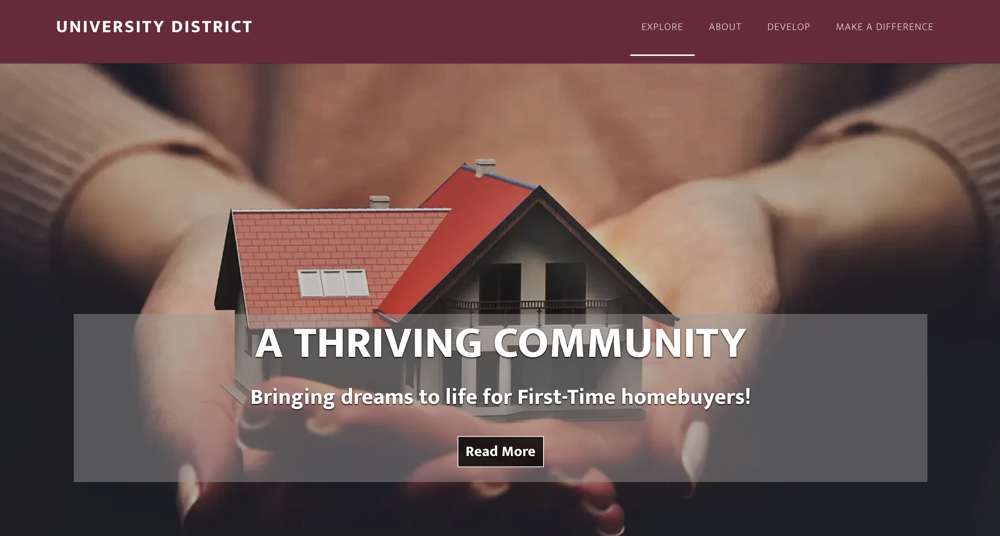

Download pdf version
My role in our group project was the content manager/developer. Since we were working in wordpress and not building a website
from scratch, there were a lot of things we had to consider when planning out our project. We were working with a lot of content
from our client so I helped the most with sorting it out in google drive. Collecting external website links, logos, pdf files, etc.
Besides that it was me helping with each of my teammates projects too. Since there were only three of us, it was really a group effort to
get everything done. Once Josephine was done with the structure of the website we went in and inserted all of the content that the client
gave us. As well as utlizing plug-ins where needed.
My initial thoughts about this project now that it’s over was that it went more smoothly than I expected it to.
Which fortunately makes this reflection positive.
I think I can count on one hand the amount of negative experiences we had and it wasn’t anything overbearing.
What made this project go so smoothly was my teammates and how we communicated with each other.
Finding out each other’s strengths and weaknesses--planning out our project in a way that wouldn’t allow us to step on each other’s toes.
While working on this project I discovered that things don’t have to be as stressful as they seem if you take the time to plan it out and communicate with others if it is a group project.
During this project I definitely recognized some of my own strengths when it comes to web development and the skills surrounding it.
My most challenging moments were definitely just getting used to wordpress and the powerful learning moments resided within that.
Creating a blog with posts is way different than developing in it.
I’m much more comfortable with wordpress than I was at the beginning of this semester.
The biggest takeaway here was to not choose to stress out so quickly and take the time to figure out how to do things.
And this can relate to a lot of things in the professional world.
When you have a career and coworkers, you want to show them that you approach things practically even if you’re unsure. My team was absolutely amazing and I owe it to all of us going through the same courses and sessions about communication.
I’ve done a lot of group projects throughout my time at UALR and this has definitely been the best one.
There weren’t many moments where we clashed or someone had fallen short.
We had a good practice of checking in with each other at least 3 times a week.
Anything that was close to being conflict was immediatley confronted, nothing was hanging in the air over us creating tension.
Mike and Josephine helped me a lot when it came to working in wordpress.
At times I did feel like there was a learning curve between us but they never made me feel out of place.
Both of them were always more than willing to help out if I had questions about anything.
I’m really thankful to both of them.
I made sure to offer my help for anything related to the site and worked closely with Josephine. I learned that my greatest strengths are managing and organizing content.
Sometimes navigating google drive doesn’t seem like an extraordinary ability but through this project I learned that it is.
Especially when it comes to working for a client, knowing where everything is and if it's accessible is important.
There’s always room for improvement. I think mine would be familarizing myself with wordpress.
The moments I was most proud of my efforts was when I would get validation from teammates about something.
As silly as that sounds I do think having a good group communication culture going does make all of the group put their best
foot forward. I definitely could teach this problem-solving process to someone easily.
Because communication is a simple concept, even though we don’t realize it at times.
The answer to our problems could rely in the person right across from us. What I think I could do differently next time is be confident in my abilities. I would say it took this group project for me to realize what I’m good at. Next time I’ll be confident and challenge myself. Above all other things I would like to work to improve my design skills. I’m becoming really interested in the UX Design area after talking with my group. In the future I can always offer a helping hand to my teammates even if I’m not familiar, because learning something new should never be passed up.
I’ll carry what I’ve learned in my courses forever probably. I already got practice with an internship and saw me naturally use the advice and information I learned in class there. This class played a big part in me maturing as a person and student--I’m definitely grateful for everything I’ve learned and the journey it took.